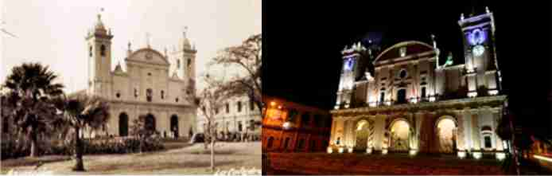

La Catedral Metropolitana de Asunción, ubicada en el Centro Histórico de la ciudad, fue la primera Diócesis del Río de la Plata. Asentada desde la época colonial, es uno de los edificios más emblemáticos de la capital, con su peculiar forma.
Además de los rústicos materiales empleados para su construcción (Adobe y palmas) debió pasar por varias transformaciones desde el año 1539, año de su primera construcción. También debido a las incipientes lluvias y crecidas del río Paraguay en cada lapso de tiempo se debía derribar la construcción y cambiar por otra nueva.
El último y actual modelo edilicio se construyó a mediados del S. XIX durante el gobierno del presidente Carlos Antonio López.
El último y actual modelo edilicio se construyó durante el gobierno del presidente Carlos Antonio López, quien, en el año 1842, "mandó que se derribe la antigua Catedral para edificar otra nueva en el mismo sitio con mejor arquitectura que otro alguno". Según los historiadores indican que el verdadero autor del diseño fue el Maestro Arquitecto Pascual Urdapilleta. En el año 1845, las obras estaban muy avanzadas, tal es así que aún sin culminar, el 27 de octubre del mismo año, se inaugura y bendice el edificio.
El libro “Templos de Asunción” de la Historiadora Margarita Durán Estragó dice: "El templo consta de tres naves, separadas por dos filas de arcos de medio punto con pilastras estriadas". En época del presidente Don Carlos Antonio López, aparece en escena la nueva tecnología que deja de lado a la madera como estructura portante para dar lugar a la mampostería de diferentes espesores y el hierro como parte de la estructura.
Desde el punto de vista de la tecnología en la Arquitectura hay un avance en tanto se deja de lado la estructura portante colonial, que consistía en muros de adobe y palma, para dar espacios a los muros portantes de mampostería de ladrillos cerámicos y revocados, asimismo se utiliza el hierro que permite mayores longitudes entre los apoyos estructurales. También en el aspecto formal hay una diferencia, se deja atrás el patrón edilicio de la época colonial para dar lugar a un patrón edilicio que se caracteriza por la transición hacia una arquitectura de fachada en temas religiosos y habitacionales, aunque sin dejar de lado la Arquitectura paraguaya de galerías perimetrales, adoptando columnas de mampostería de formas octogonales que reemplazan a las columnas de madera y otros.
Si bien la fachada principal de esta Iglesia es estilo Neoclásico de extrema sobriedad, con reminiscencias a las Iglesias Jesuíticas de Europa, el edificio en su totalidad debe ser considerado de estilo ecléctico, es decir, de fachada Neoclásica y planta arquitectónica Colonial (con galerías exteriores).
La planta de esta Catedral tiene forma rectangular y mide aproximadamente 80m de largo x 32m de ancho.